Archiv – 2025
Die Gänsetränke bekommt einen Anbau
Mitte Februar haben wir die Gänsetränke um eine Überdachung auf der Nord-Ostseite erweitert.
Dies bietet drei entscheidende Vorteile: Eine feste Spülstation für das Kirschblütenfest,
einen wettergeschützten Platz für die Mülltonnen (wodurch die Ecke sauberer bleibt) und
einen trockenen Unterstand für Raucher bei Regen.
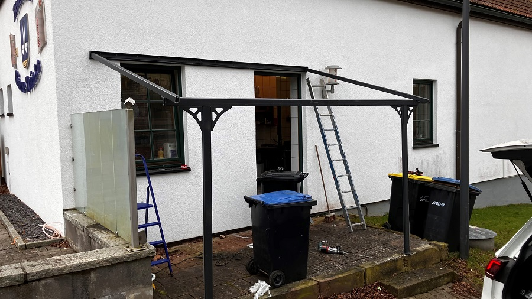
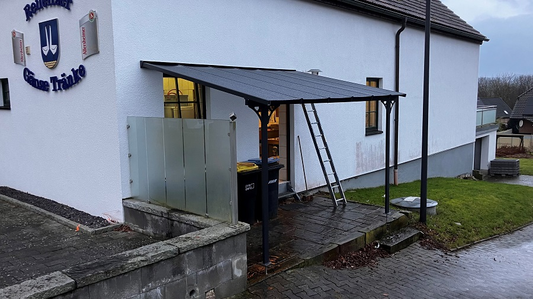
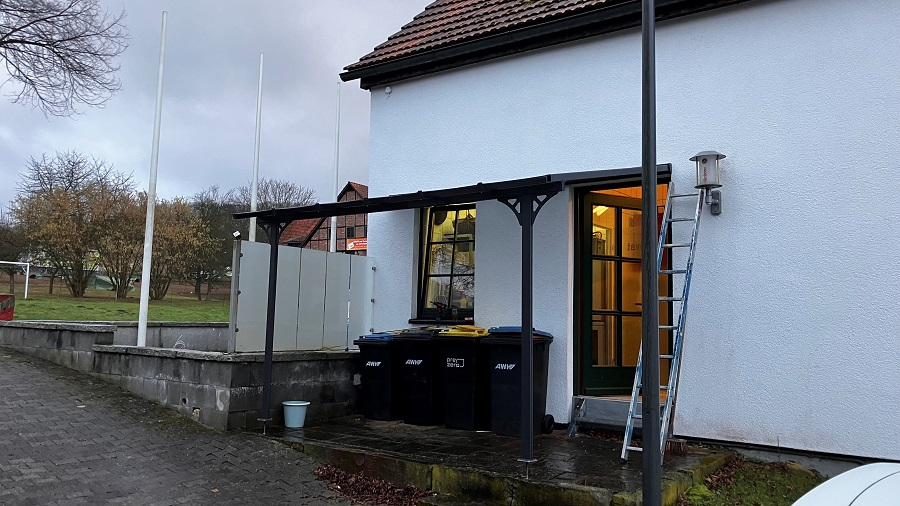
Neue Möbel & Instandhaltung
Am 10. März wurden neue Bänke für die Gänsetränke angeschafft. Da die alten Holzmöbel nach 13 Jahren
verrottet waren, fiel die Wahl auf langlebigen Recyclingkunststoff. Im gleichen Zuge wurden
alle Pflasterflächen gereinigt und versiegelt, sodass die Terrasse nun in neuem Glanz erstrahlt.
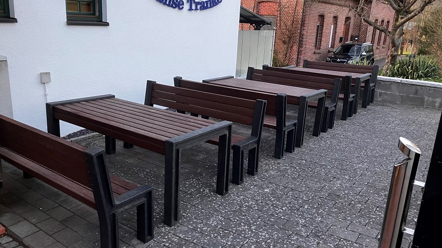
Energiewende & Wellnessoase
Ende März haben wir ein Balkonkraftwerk in Betrieb genommen, um die gestiegenen Stromkosten abzufedern.
Zudem wurden pünktlich zum Kirschblütenfest die Hütten und Hollywoodschaukeln an der Weser überarbeitet.
Statt anfälliger Strohdächer erhielten sie eine langlebige Eindeckung mit roten Bitumenschindeln.
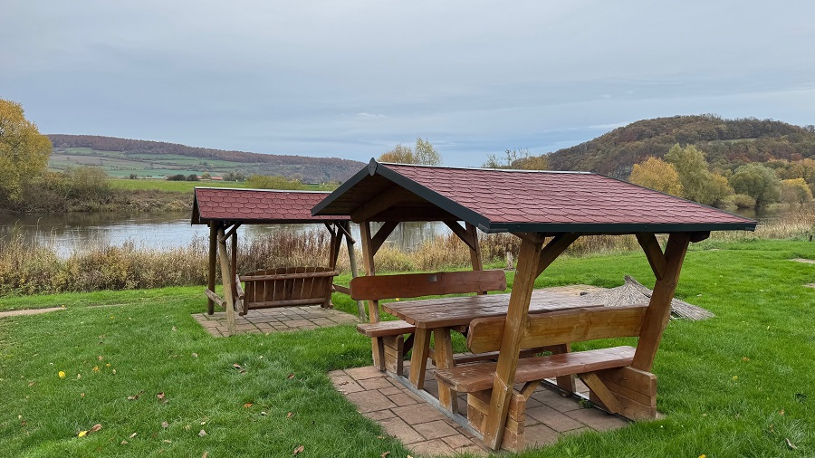
Osterfeuer der Feuerwehr
Das traditionelle Osterfeuer lockte wieder zahlreiche Besucher an. Nach dem Feuer wurde
in der Gänsetränke noch ausgiebig bis in die frühen Morgenstunden gemeinsam gefeiert.
Kirschblütenfest: Ein voller Erfolg
Das Kirschblütenfest zog auch dieses Jahr wieder zahlreiche Besucher an. Bei strahlendem Sonnenschein genossen alle Gäste das bunte Programm. Wir freuen uns schon auf das nächste Jahr, wenn wir wieder unsere japanischen Freunde in Reileifzen begrüßen dürfen.
Rückblick: 150 Jahre Feuerwehr Reileifzen
Drei Tage lang herrschte Ausnahmezustand an der Weser: Unsere Wehr feierte ihr 150-jähriges Bestehen! In einem großen Festzelt wurde gelacht, getanzt und gefeiert. Die Reileifzer haben mal wieder bewiesen, dass sie wissen, wie man Feste feiert. Wir freuen uns schon auf den nächsten großen Geburtstag!
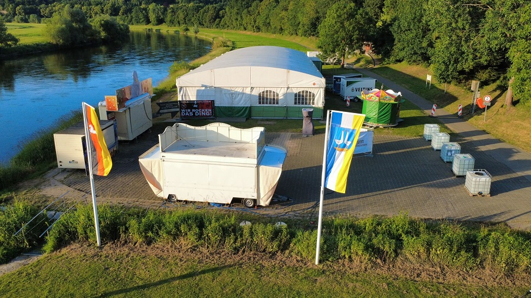
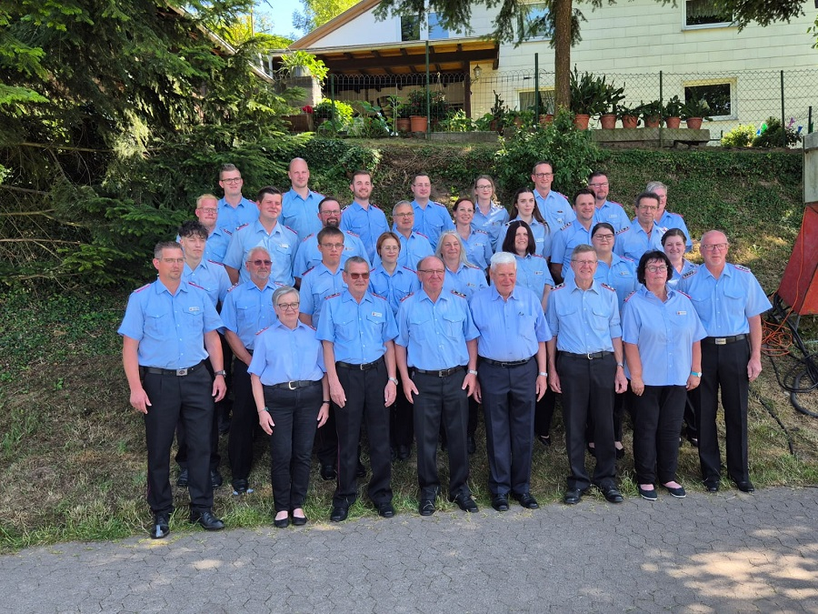
25 Jahre Jugendfeuerwehr Lütgenade
Am 13. September feierte die Jugendfeuerwehr Lütgenade ihr 25-jähriges Bestehen in Reileifzen. Nach der erfolgreichen Abnahme der Jugendflammen 1 und 2 folgte die feierliche Verleihung in der Gänsetränke.
Bei bestem Wetter waren die kleinen Brandschützer sichtlich stolz auf ihre Abzeichen und hatten einen Tag voller Spaß und Kameradschaft.
Wichtige Info: Kein Spielplatz mehr an der Weser
Leider gibt es schlechte Nachrichten für unsere kleinen Besucher: Aufgrund neuer Richtlinien können wir keinen neuen Spielplatz an der Weser errichten. Lediglich das Volleyballfeld darf im kommenden Jahr wieder aufgebaut werden.
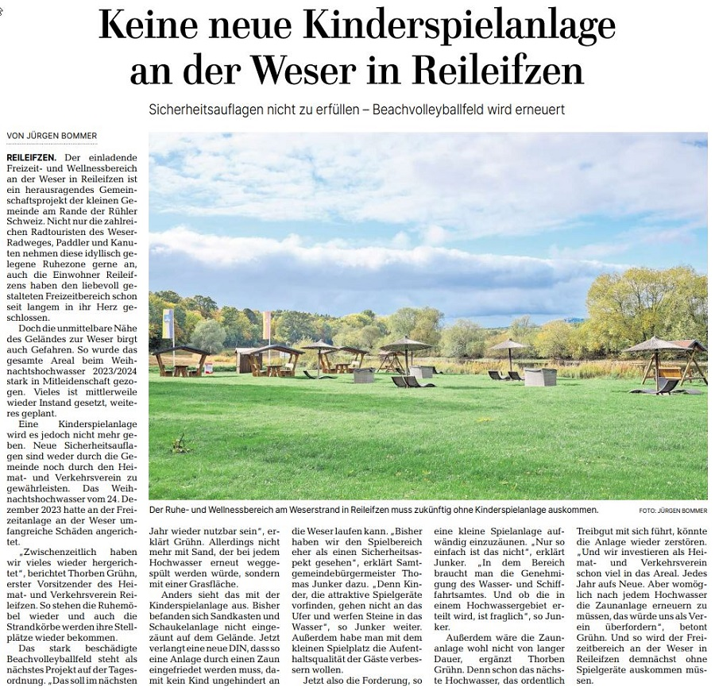
Arbeitseinsatz: Weser und Gänsetränke winterfest
Dank vieler helfender Hände wurde am 01. November die Wellnessoase an der Weser abgebaut. Da wir so zügig vorankamen, konnten wir auch die Gänsetränke direkt winterfest machen.
Zusätzlich begann die mühselige Arbeit an der neuen Bestuhlung: Die alten Polster wurden entfernt, um Platz für die neuen Bezüge zu schaffen. Ein großes Dankeschön an alle fleißigen Helfer des Tages!
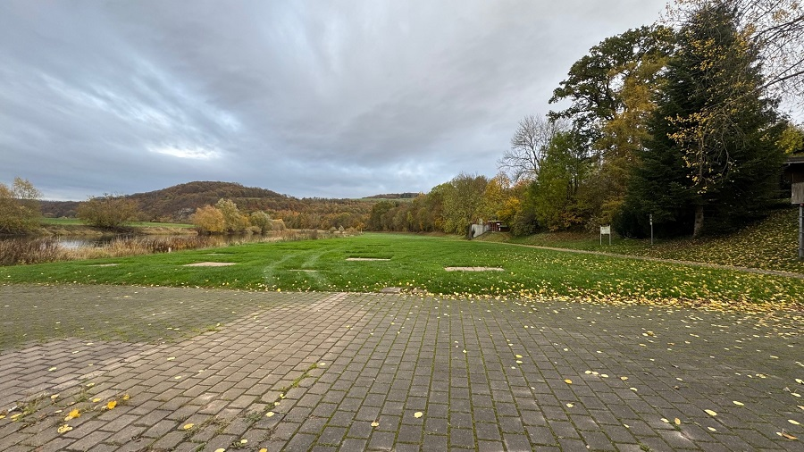
Preisskat und Knobeln: Die Gewinner stehen fest
Spannende Runden und gute Stimmung prägten das alljährliche Turnier des Verkehrsvereins in der Gänsetränke. Es wurde eifrig um Punkte gekämpft, wobei der Spaß stets im Vordergrund stand.
Am Ende des Abends konnten wir zwei stolze Sieger küren: Justina Eikhoff setzte sich beim Knobeln durch, während Boris Haut den ersten Platz beim Skat errang. Herzlichen Glückwunsch an beide Gewinner!
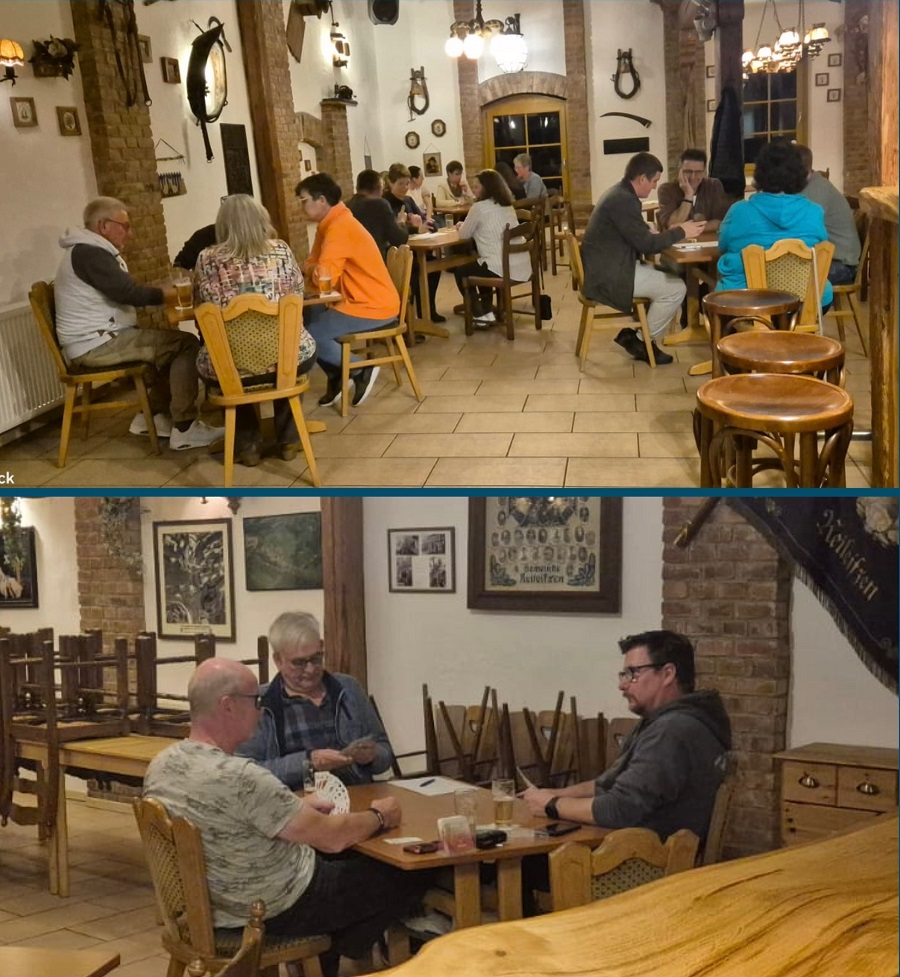
Jahreshauptversammlung der ARV: Neue Theke und Finanzen
Am 25. November fand die Jahreshauptversammlung der ARV statt. Der 1. Vorsitzende Friedrich Hoffmeister blickte auf ein Jahr zurück, dessen zentrales Projekt der erfolgreiche Bau der neuen Theke war. Zusätzlich wurde den Mitgliedern ein Muster der geplanten neuen Stühle für die „Gänsetränke“ präsentiert.
Kassenwartin Carola Tacke informierte detailliert über das Zahlenwerk, bevor der 2. Vorsitzende Thorben Grühn offen auf die derzeit angespannte finanzielle Lage der Gänsetränke einging und erste Einblicke in die Planungen für die Zukunft gab. Die Versammlung verlief harmonisch und endete mit dem Ausblick auf das nächste Treffen im Februar 2026.
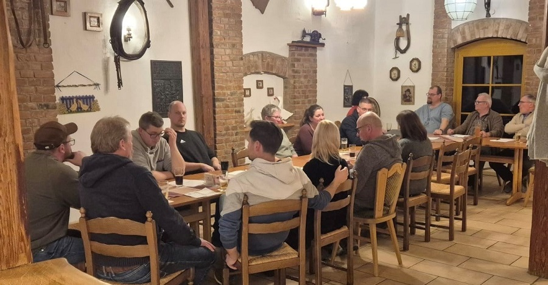
Vorweihnachtlicher Glanz: Verkehrsverein stellt Weihnachtsbaum auf
Pünktlich zum ersten Advent ist die Dorfmitte bereit für die Weihnachtszeit: Wie in jedem Jahr hat der Verkehrsverein die Ärmel hochgekrempelt und den traditionellen Weihnachtsbaum aufgestellt.
Es ist eine liebgewonnene Tradition, die verlässlich die „Weihnachtszeit“ im Ort einläutet. Rechtzeitig zum Start in die Adventswochen rückten die Helfer des Verkehrsvereins aus, um den Baum an seinem angestammten Platz in der Dorfmitte zu verankern.
Dank des ehrenamtlichen Einsatzes erstrahlt das Dorf nun wieder in festlichem Glanz. Der Verkehrsverein sorgt damit nicht nur für optische Verschönerung, sondern hält auch einen wichtigen Brauch lebendig, der Einheimische und Besucher gleichermaßen auf das kommende Weihnachtsfest einstimmt. Wir wünschen allen eine besinnliche Adventszeit!
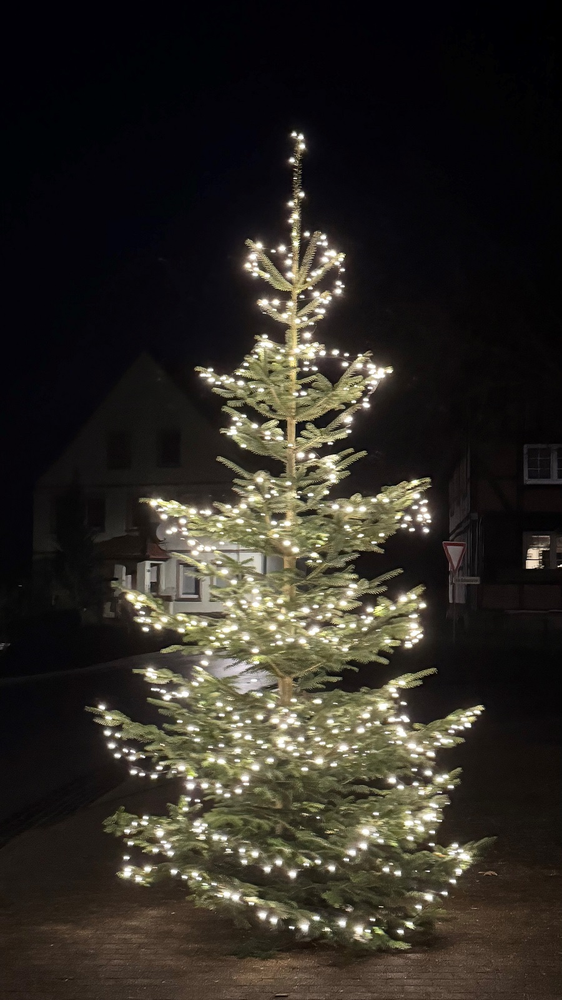